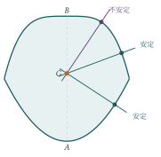

STEP III 2025、第9問
先に進む前に問題を読んでおこう。問題は、OCRが配布している2025年のSTEP問題一式（zipファイル）のSTEP IIIに収録されている： www.ocr.org.uk/Images/750486-2025-past-papers.zip
導入
ラグビーボールをテーブルに置くと、横向きに落ち着く。端を下にして立てても、細心の注意を払えばそのまま釣り合うが、ほんの少しつつくだけで倒れてしまう。テーブルの上に静止している剛体（rigid body）にはいくつかの平衡位置（equilibrium position）があり、そのうちあるものは安定（stable）、あるものは不安定（unstable）である。どの平衡位置が存在するかは、物体の形と重心（centre of mass）だけで決まる。物体はいくつの平衡位置をもちうるだろうか。最も少ない場合はいくつだろうか。
この問題では、上半分がドーム状で下半分が尖った、こまのような形の立体を作り、それが正立や倒立の状態のほかに、3通りの異なる傾きで静止できることを示す。鍵となるのはただ一つの幾何学的条件である。物体が表面上のある点で静止できるのは、ちょうどその点における表面の法線（normal）が重心を通るときである。その背後には最近の発見がある。安定な位置と不安定な位置をそれぞれ一つずつしかもたない凸（convex）な形、ゴムボツ（Gömböc）である。
取りかかる前に
立体がテーブルの上に静止しており、曲面上のただ一点 \(X\) でテーブルに接している。立体にはたらく力は、重力（重心 \(G\) に作用する）と \(X\) における抗力（reaction）である。これらが釣り合うのはどのようなときか。
テーブルは \(X\) で表面に接している。抗力は \(X\) に作用し、テーブルに垂直に、すなわち表面の法線に沿ってはたらく。重力は \(G\) を通って鉛直にはたらく。2つの力が釣り合うのは同一直線上にはたらくときに限るので、\(X\) を通る鉛直線、すなわち \(X\) における法線は \(G\) を通らなければならない。したがって、物体が \(X\) で接して静止できるのは、ちょうど \(X\) における法線が \(G\) を通るときである。
順を追って解く
段階 1 重心
立体を、半径 \(x\)、厚さ \(\delta x\)、高さ \(y\) の薄い円筒殻（cylindrical shell）に切り分けよ。殻の体積はいくらか。また、その重心はどこにあるか。
\(y = \frac{r^n - x^n}{r^{n-1}}\) とすると、殻の体積は \(2\pi xy\,\delta x\) であり、その重心は高さ \(\frac y2\) にある。よって \[V = \int_0^r 2\pi xy\,\mathrm{d}x = \frac{2\pi}{r^{n-1}}\Bigl(\frac{r^{n+2}}{2} - \frac{r^{n+2}}{n + 2}\Bigr) = \frac{n\pi r^3}{n + 2},\] であり、底面に関するモーメント（moment）は \[\begin{aligned} \int_0^r 2\pi x\cdot\frac{y^2}{2}\,\mathrm{d}x &= \frac{\pi}{r^{2n-2}}\int_0^r x(r^n - x^n)^2\,\mathrm{d}x \\ &= \pi r^4\Bigl(\frac12 - \frac{2}{n + 2} + \frac{1}{2n + 2}\Bigr) = \frac{n^2\pi r^4}{2(n + 1)(n + 2)}. \end{aligned}\] である（括弧内が簡単になるのは \((n + 1)(n + 2) - 4(n + 1) + (n + 2) = n^2\) だからである）。割り算すると \[\bar y = \frac{nr}{2(n + 1)}. \qed\] \(n = 2\)（放物面（paraboloid））のとき、これはよく知られた結果 \(\frac r3\) になる。\(n \to \infty\) とすると立体は円柱に近づき、\(\bar y \to \frac r2\) となる。
段階 2 法線が軸と交わる位置
\(x = rp\) における曲線の傾きは \(-\frac{nx^{n-1}}{r^{n-1}} = -np^{n-1}\) なので、法線の傾きは \(\frac{1}{np^{n-1}}\) である。法線に沿って \(\bigl(rp, r(1 - p^n)\bigr)\) から \(y\) 軸まで進むと、\(x\) は \(rp\) だけ減少し、\(y\) は \(\frac{rp}{np^{n-1}} = \frac{r}{np^{n-2}}\) だけ減少する。よって \[Y = r\Bigl(1 - p^n - \frac{1}{np^{n-2}}\Bigr). \qed\]
\(n = 4\) のとき、\(Y = r\bigl(1 - p^4 - \frac{1}{4p^2}\bigr)\) である。\(Y\) が最大になるのはどこか。\(p \to 0\) のとき、また \(p = 1\) のときはどうなるか。
\(\frac{\mathrm{d}Y}{\mathrm{d}p} = r\bigl(-4p^3 + \frac{1}{2p^3}\bigr) = 0\) となるのは \(p^6 = \frac18\)、すなわち \(p^2 = \frac12\) のときである。このとき \(Y = r\bigl(1 - \frac14 - \frac12\bigr) = \frac14r\) である。■
\(p \to 0\) のとき \(Y \to -\infty\) である（頂上付近ではドームが非常に平らなので、法線はほぼ鉛直となり、はるか下方で軸と交わる）。\(p = 1\) では \(Y = -\frac14r\) である。したがって、\(p\) が \(0\) から \(1\) まで動くとき、\(Y\) は \(-\infty\) から \(\frac14r\) まで増加し、再び \(-\frac14r\) まで減少する。
段階 3 こま
小問 (iii) の立体は、逆さにした放物面（\(n = 2\)）の上にドーム（\(n = 4\)）をのせたものである。その重心はどこにあるか。
段階 1 より、ドームの体積は \(\frac{2\pi r^3}{3}\) で、重心は \(\frac{2r}{5}\) にある。放物面の体積は \(\frac{\pi r^3}{2}\) で、逆さになっているので重心は \(-\frac r3\) にある。よって \[\bar y = \frac{\frac23\cdot\frac25 - \frac12\cdot\frac13}{\frac23 + \frac12}\,r = \frac{\frac{4}{15} - \frac16}{\frac76}\,r = \frac{3r}{35}.\] \(G\) は \(\bigl(0, \frac{3r}{35}\bigr)\) にあり、最も幅の広い位置よりわずかに上にある。
段階 4 平衡位置を数える
傾いた平衡には、法線が \(G\) を通るような点（\(A\) でも \(B\) でもない）が必要である。表面の各部分において、法線が高さ \(\frac{3r}{35}\) で軸と交わる点はいくつあるか。
ドーム。その法線が軸と交わる高さ \(Y\) は、\(-\infty\) から \(\frac14r\) まで増加し、\(-\frac14r\) まで減少する。\(-\frac14r < \frac{3r}{35} < \frac14r\) なので、中間値の定理（intermediate value theorem）により、値 \(\frac{3r}{35}\) は増加する部分で1回、減少する部分で1回とられる。すなわち2点である。
尖った底部。\(n = 2\) の場合の小問 (ii) を \(x\) 軸に関して折り返すと、パラメータ \(p\) の点における法線は \(-r\bigl(1 - p^2 - \frac12\bigr) = r\bigl(p^2 - \frac12\bigr)\) で軸と交わり、これは \(-\frac12r\) から \(\frac12r\) まで増加する。これが \(\frac{3r}{35}\) に等しくなるのは、\(p^2 = \frac{41}{70}\) のときのちょうど1回である。
これら3点はそれぞれ平衡を与え、3本の法線は軸と互いに異なる角をなすので、\(\overrightarrow{AB}\) は鉛直方向と0でない3通りの異なる角をなす（図 11.8.1）。■

振り返り
物理的な条件を幾何に翻訳する。平衡は「法線が \(G\) を通る」という条件になった。
解かずに存在を示す。角度そのものは一度も求めていない。中間値の定理と関数 \(Y(p)\) の形から、それがいくつあるかがわかった。
一般的な結果を再利用する。一般の \(n\) に対する小問 (ii) によって、小問 (iii) の表面の2つの部分をどちらも扱うことができた。
背後にある数学
臨界点としての平衡
立体が点 \(X\) で静止しているとき、テーブルから測った \(G\) の高さは、\(G\) から \(X\) における接平面までの距離である。凸な物体では、\(GX\) が法線に沿っているとき、これは \(|GX|\) に等しい。一般に、平衡とは \(G\) から表面までの距離の臨界点（critical point）である。\(|GX|\) が停留する（stationary）点 \(X\) とは、ちょうど法線が \(G\) を通る点のことである。安定な平衡はこの距離の極小（local minimum）（\(G\) ができるだけ低い）であり、不安定な平衡は極大（local maximum）または鞍点（saddle point）である。
断面に沿って \(A\) から \(B\) まで回っていくと、\(G\) からの距離は次のように変わる。\(A\) では大きく（極大：尖った先端で釣り合っており、不安定）、底部の傾いた点では小さく（極小、安定）、縁では大きく、ドームの下側の傾いた点では小さく（安定）、上側の傾いた点では大きく（不安定）、\(B\) では小さい（安定：ドームの頂上で静止する）。図が示すように、極小と極大は交互に現れなければならない。（実は、この問題では数えていない平衡がもう1つある。立体は、表面がただ1つの法線をもたない鋭い縁の上で、不安定ながら釣り合うことができる。）
ゴムボツ
凸な物体の平衡はどこまで少なくできるだろうか。どんな物体にも、少なくとも1つの安定な位置と1つの不安定な位置がある。すなわち、表面上で \(G\) に最も近い点と最も遠い点である。一様な密度をもつ2次元の凸図形は、常に少なくとも4つの平衡をもつ（距離の極小2つと極大2つが交互に並ぶ）。1995年、ウラジーミル・アーノルド（Vladimir Arnold）は、一様な密度をもつ3次元の凸な物体で、平衡がちょうど2つ、つまり安定なもの1つと不安定なもの1つだけであるものが存在するかを問うた。2006年、Gábor Domokos と Péter Várkonyi がそのような物体を構成した。それがゴムボツである。どんな向きで置いても、転がったり揺れたりして、ただ1つの安定な位置に落ち着く。Domokos はのちに、ある種のカメの甲羅がこの形に近く、ひっくり返されたときに起き上がるのに役立っていることに気づいた。
物体の安定性の研究はアルキメデス（Archimedes）にさかのぼる。彼は On Floating Bodies（『浮体について』）において、浮かんでいる放物面（船体のモデル）が正立して安定なのはどのようなときで、転覆するのはどのようなときかを、その形と密度によって解析した。幾何学だけで導かれた彼の答えには、ここで用いたのとまさに同じ種類の重心と法線の計算が含まれている。造船技師は今も、メタセンター（metacentre）という形で彼の考えを用いている。浮心（centre of buoyancy）を通る鉛直線が船の軸と交わる点が重心より上にあれば、船は安定である。
思考のスキル
平衡はポテンシャルエネルギー（potential energy）の停留点であり、安定な平衡はその極小である。停留点は、解いて求める代わりに数えよ。
ここでは、ポテンシャルエネルギーは \(G\) の高さ、すなわち \(G\) から表面までの距離に比例していた。大学では、この見方は力学、化学（分子はエネルギーの極小に落ち着く）、そして位相幾何学（topology）を貫いている。位相幾何学では、モース理論（Morse theory）によって、曲面上の任意の関数の極小、極大、鞍点の個数が、その曲面の形によって制約されることが示される。
次の一歩
起き上がりこぼし。STEP II 1996、第9問 に挑戦しよう。半球の上に円錐をのせたものが自ら起き上がるのはどのようなときか。（ヒント：\(G\) は半球の中心に対してどこになければならないか。）
球。一様な中実球では、すべての法線が中心を通る。このことは、その平衡について何を意味するか。球の重心が中心からわずかにずれている場合はどうか。
楕円。自身を含む平面内で直線上を転がる楕円板は、ちょうど4つの平衡をもつことを示し、そのうちどれが安定かを特定せよ。
2つの放物面。小問 (iii) のドームを放物面 \(ry = r^2 - x^2\) に置き換え、立体が \(x\) 軸に関して対称になるようにする。\(G\) が原点にあることを示し、傾いた平衡を求め、それらが等しい傾きの対になって現れる理由を説明せよ。
さらに学ぶために
Péter Várkonyi & Gábor Domokos, “Static equilibria of rigid bodies: dice, pebbles, and the Poincaré–Hopf theorem”, Journal of Nonlinear Science 16 (2006)。ゴムボツの論文である。
Daniel Kleppner & Robert Kolenkow, An Introduction to Mechanics（Cambridge University Press）。平衡と安定性について。
Chris Rorres, “Completing Book II of Archimedes’s On Floating Bodies”, Mathematical Intelligencer 26 (2004)。アルキメデスの安定性解析を、現代的な図とともに解説している。